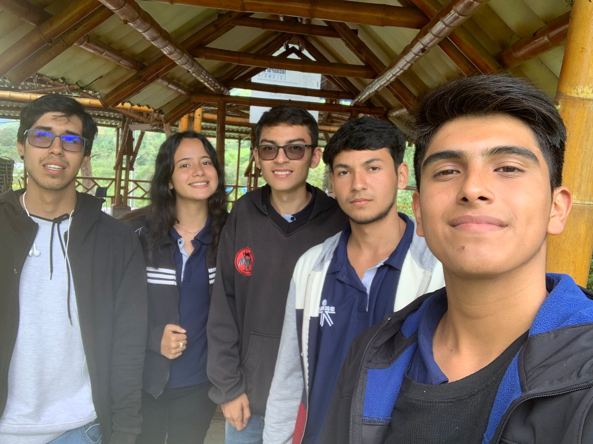

Mi nombre es Julian Yesid Coronado Muñoz tengo 18 años y me encanta la tecnolgia, , soy aprendiz del Sena, actualmente estoy cursando el titulado Analisis Y Desarrollo De Software (ADSO) con el id ficha(2644590) mi equipo y yo planeamos sistematizar ciertos puntos que hoy en dia son bastantes tardos de realizar en los ambientes de formacion TIC y agregando nuevas formas de llevar un control del inventario de los implementos tecnologicos que hay y que pueden llegar en un futuro a la sede.
Presentación De Mi Equipo
Mi grupo de trabajo esta compuesto por:
Julian Yesid Coronado (El vocero): - Lider y cerebro del grupo 🧠.
David Ricardo Peña (Sumo): - Colider y mente maestra a la hora de hechar codigo 💡.
Yeni Paola Giraldo (Pucca): - Maestra del diseño 👩🏫.
Miguel Angel Serrano (Otto): - Alivio comico del grupo 🎪.
Luis Fernando Muñoz (Apu): - Luis, el heterocurioso 💪.

Cada integrante de este grupo posee cualidades que haran que este proyecto salga adelante, cada quien tiene su rol y sabe muy bien como desempeñarlo, juntos daremos lo mejor para destacar y ser de los mejores en programacion.
Introducción
En la presente pagina web se dara a conocer nuestro proyecto de formación (INAM) el cual es un inventario que ayudara a tener una mejor auditoria y monitoreo de los articulos tecnologicos que se encuentran en el ambiente de formacion TIC, teniendo registrado cada implemento con codigo, ya sea un computador o un periferico de este, sumado a un historial de mantenimiento que se le hacen a los equipos, una ficha tecnica de cada equipo, historial y registro de prestamos dentro de la sede yamboro, tambien contara con una interface en la cual se vera la disponibilidad de los ambientes de formacion y su respectiva confirmacion de uso.
Contenido
Para que este proyecto se lleve a cabo con exito necesitamos principalmente los requerimientos que son la base de cualquier proyecto de Software, teniendo ya los requerimientos estructurados podemos empezar a hablar de lo que necesitamos fisicamente para el correcto funcionamiento del aplicativo.
¿Que necesitamos?
Tenemos la ventaja que para el funcionamiento del aplicativo se necesitan algunos equipos que ya se tienen en el ambiente de formacion donde se ejecutan estos proyectos, ya sea el equipo para ejecutar nuestro programa, tener acceso a internet para hacer uso de él etc. Lo principal que se necesita para que inam se lleve a cabo es una intranet. Para que una intranet te preguntaras.. Este alojamiento local de nuestra aplicacion es necesario para que funcione en todas las redes que tiene el sena sede yamboro, para que en cualquier ambiente de formacion tic se pueda verificar todos los implementos que tiene un ambiente en especifico o para separar el uso de un ambiente en un dia especifico para su uso.
En caso de hacer uso de nuestro programa en un lugar donde no se cuenten los implementos hay un listado de lo minimo que se necesitara para su uso:
Minimo un computador (Precio pc todo en uno $1,499,000)
Servidor fisico ($5,399,900)
En caso de uso de un servidor en nube esta la opcion de sql server (Precio servidor estandar $209 dls mensuales)
En caso de usar Host para alojar la aplicacion web ($371,700 mensuales que incluye 40 bases de datos MySQL y 500gb de ancho de banda)
Costo de programacion (4,000,000 El precio puede variar dependiendo el cliente)
Esto es lo que se necesita principalmente para la ejecucion del programa.